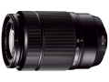

一款焦距可从76mm扩大到350mm（相当于35mm格式）的望远变焦镜头，采用了10组13片的全玻璃镜片，包括1片非球面镜片和1片ED镜片的结构。 镜头在整个焦距内具有高级光学性能，即使拍摄对象在很远距离，也可以呈现出清晰的图像。 轻巧的对焦镜头以及高精度的马达可实现快速、静音的自动对焦。光学图像防抖功能（大约3.5档）可减少手持拍摄静止图像和视频中的相机抖动。
精致实用的狗头。
变焦手感轻柔，重量轻，成像收小一档光圈还是非常好的，阳光头就在阳光下使用吧，长焦端的虚化还是不错的，50端感觉还有畸变。放大倍率可以。光圈环没有就没有，一点都不影响，别家的全没有。做工还可以，不知进灰情况怎样。防抖很给力。色彩大概是不错的吧，影响色彩的因素太多。
全是塑料啊，屁股上都是塑料，后盖还是半透明的，鬼子就喜欢搞得那么性感。光圈太小，如果没有防抖就只能放架子上用了。暗光就别指望用它了。 狗头，当然现在各家的狗头其实都做的不错了。